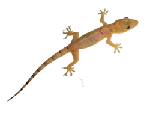
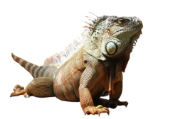
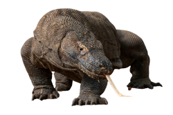
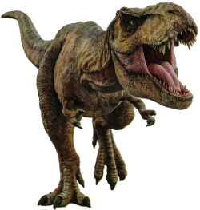

Lagartixa - 1 Estagio
Lagarto medio- 2 Estagio
Lagarto trembolona - 3 Estagio
Galinha evoluida - 4 Estagio
Origem e historia da especie
Os lagartos são tetrápodes, ou seja, vertebrados com quatro membros locomotores e, apesar de algumas linhagens atuais possuírem apenas dois ou nenhum membro locomotor, os ancestrais de todas as espécies de lagartos são tetrápodes. A maioria das espécies de lagartos possuem a anatomia externa similar, com a cabeça em formato triangular, quatro membros posicionados ao lado do corpo e cauda longa. O tamanho das espécies pode variar de menos de 2 centímetros, na espécie Sphaerodactylus ariasae encontrada na República Dominicana, até os enormes dragões-de-Komodo (Varanus komodoensis) que pode atingir até 3 metros de comprimento e pesar mais de 70 kg. Em tempos pré-históricos, a Austrália abrigou um dos maiores lagartos já existentes, o Megalania (Varanus priscus), que podia atingir mais de 7 metros e pesar mais de 1000 kg. Hoje em dia, no entanto, cerca de 80% das espécies de lagarto são pequenas.
Os fósseis de lagartos mais antigos datam do Mesozóico, um período que foi completamente dominado por uma linhagem irmã dos lagartos, os Archosauria, que compreendia os dinossauros não-avianos e avianos. Por isso, os lagartos enfrentaram muita competição por alimento, o que é uma das hipóteses para o tamanho reduzido da maioria das espécies bem como a alimentação insetivora, pois competir por espaços e presas menores era mais fácil e factível para as linhagens de lagartos da época. Com o tempo e a extinção de dinossauros eles atingiram tamanhos maiores, até chegar no já mencionado Megalania.
Algumas espécies de lagartos possuem dois ou nenhum membro, mas isso não significa que eles não são tetrápodes. Os ancestrais dos lagartos foram tetrápodes e essa condição apoda, ou seja, sem membros, é um caracter mais recente, derivado de um ancestral com quatro membros. A família Amphisbaenidae, por exemplo, é composta somente por espécies sem membros. Existe uma espécie de lagarto da América Central, o Bipes biporus, que possui somente os membros dianteiros, os quais ele usa para adentrar em buracos. Espécies apodas são fossoriais, ou seja, vivem em baixo da terra, e provavelmente essa característica apoda foi selecionada ao longo da história evolutiva por esse fato.